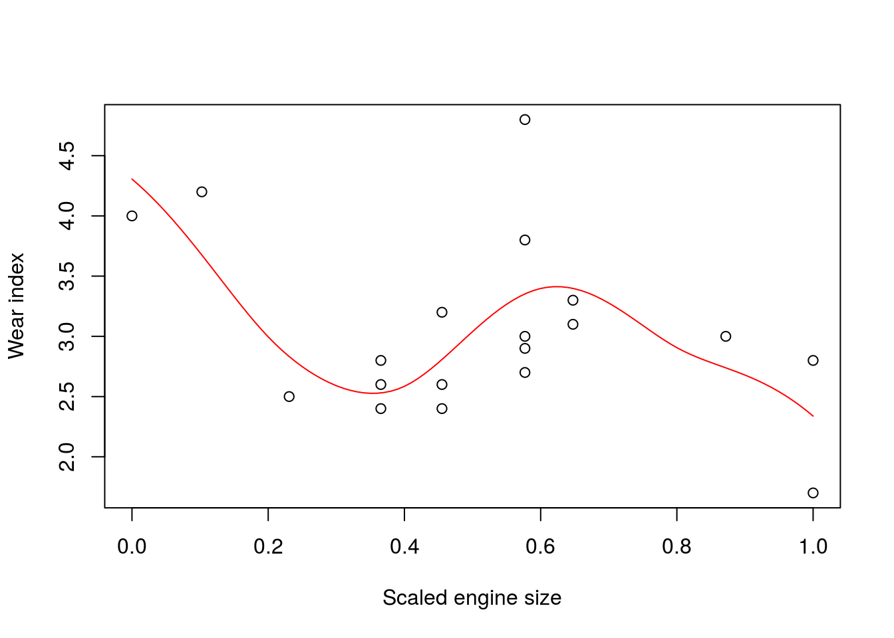
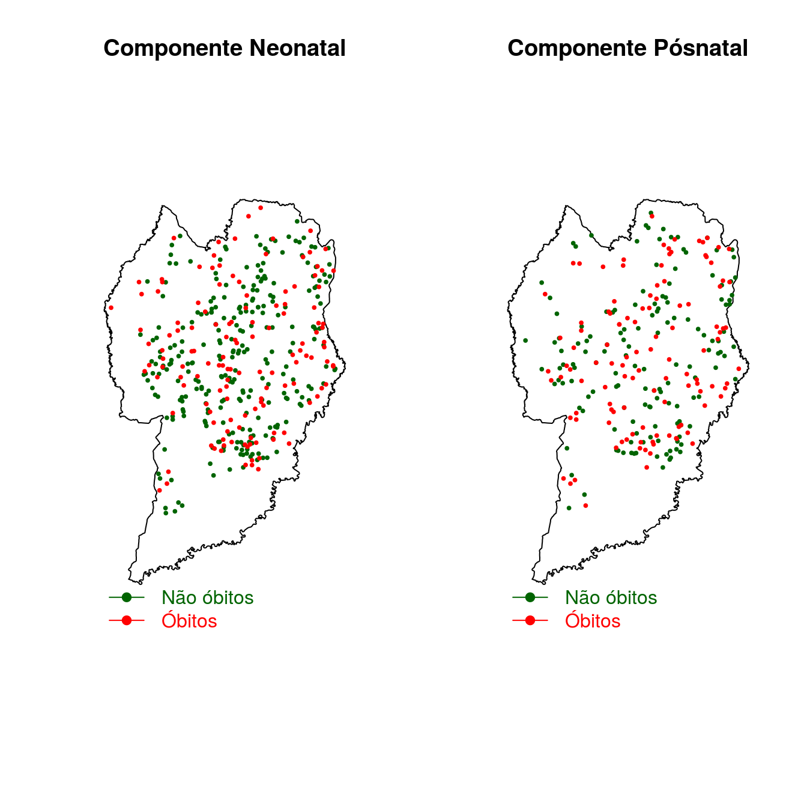
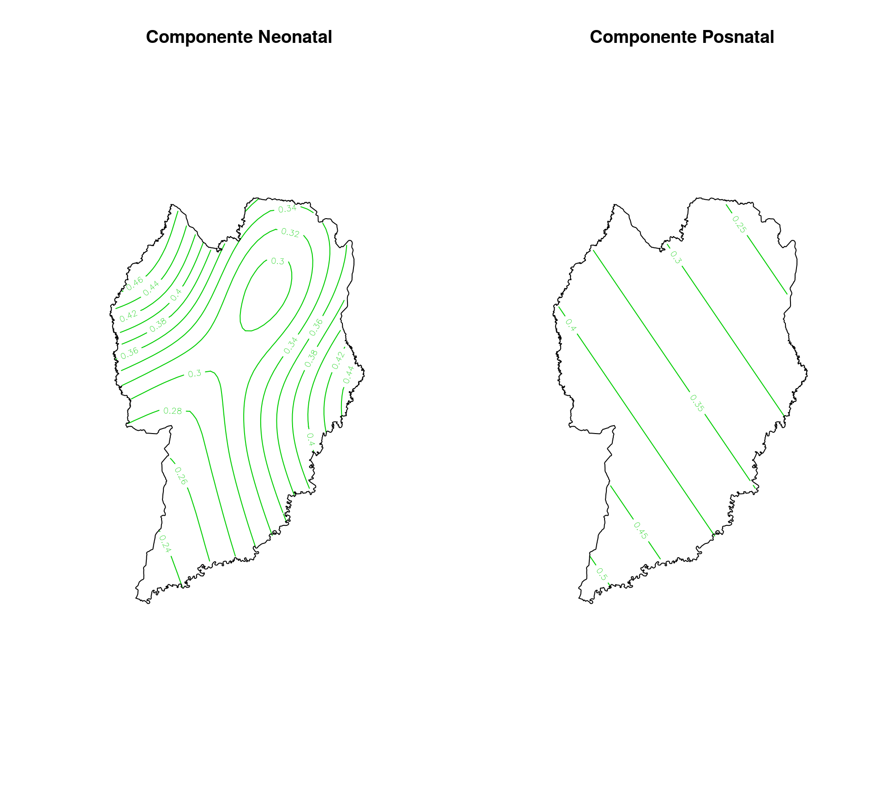

\[Y_i = \mu_i+\epsilon_i\]
em que, \(\mu_i = X_i\beta\) e \(\mu_i = E(Y_i)\)
\[ g(\mu_i) = X_i\beta \]
em que , \(g\) é uma função de ligação
GAM - Generalized Additive Model
\[ g(\mu_i) = X_i\beta+f_1(x_{1i})+f_2(x_{2i})+f_3(x_{3i},x_{41})+... \]
Para os modelos GLM e GAM, \(Y_i \sim\) alguma distribuição da familia exponencial
\[ y_i = S(x_i)+\epsilon_i \]
\[ S(x) = \sum b_j(x)\beta_j \]
em que \(b_j(x)\) é a j-ésima base da função.
size <- c(1.42,1.58,1.78,1.99,1.99,1.99,2.13,2.13,2.13,2.32,
2.32,2.32,2.32,2.32,2.43,2.43,2.78,2.98,2.98)
wear <- c(4,4.2,2.5,2.6,2.8,2.4,3.2,2.4,2.6,4.8,2.9,3.8,3,
2.7,3.1,3.3,3,2.8,1.7)
x <- size-min(size);x <- x/max(x)
plot(x,wear,xlab='Scaled engine size',ylab='Wear index')
rk <- function(x,z) ## R(x,z) for cubic spline on [0,1]
{ ((z-0.5^2)-1/12)*((x-0.5^2)-1/12)/4-
((abs(x-z)-0.5)^4-(abs(x-z)-0.5)^2/2+7/240)/24
}
spl.X <- function(x,xk)
## set up model matrix for cubic penalized regression spline
{ q <- length(xk) + 2 # number of parameters
n <- length(x) # number of data
X <- matrix(1,n,q) # initialized model matrix
X[,2] <- x # set second column to x
X[,3:q] <- outer(x,xk, FUN=rk)
X
}
xk <- 1:4/5 # choose some knots
X <- spl.X(x,xk) # generated model matrix
mod.1 <- lm(wear~X-1) # fit model
xp <- 0:100/100 # x values for prediction
Xp <- spl.X(xp,xk) # prediction matrix
lines(xp,Xp%*%coef(mod.1),col='red')
A idéia é: tirar sucessivamente elementos da amostra e fazer uma estimativa do ponto retirado.
Objetivo é: minimizar o erro de predição.
- Generalized Cross Validation (GCV)
Usado quando a escala do parâmetro não é conhecida
- Un-Biased Risk Estimator (UBRE)
Usado quando a escala do parâmetro é conhecida Pacote usado neste estudo
- mgcv::gam()Pacotes para ajustar modelos GAM
- gam::gam()
- tsDyn::aar()
- gamlss::gamlss()### Carregando pacotes necessários
sapply(c("sp", "maptools", "spdep", "mgcv", "rgdal"), require, char=T)
##### lendo o mapa do estado do PARANÁ
cwb<-readOGR("div_municipal.shp",layer="div_municipal")
######## Carregando dados de mortalidade neonatal
neo <- read.table('neo_contr1.txt',h=T)
head(neo)
names(neo)
neo$Y <- as.factor(neo$Y)
neo$ESCMAE <- as.factor(neo$ESCMAE)
neo$ESTCIVMAE <- as.factor(neo$ESTCIVMAE)
neo$GESTACAO <- as.factor(neo$GESTACAO)
neo$GRAVIDEZ <- as.factor(neo$GRAVIDEZ)
neo$PARTO <- as.factor(neo$PARTO)
neo$RACACOR <- as.factor(neo$RACACOR)
levels(neo$GESTACAO) <- c('0','0','0','0','1','0')
summary(neo$GESTACAO)
prop.table(table(neo$Y))
######## Carregando dados de mortalidade pos
pos <- read.table('pos_contr2.txt',h=T)
pos$Y <- as.factor(pos$Y)
pos$ESCMAE <- as.factor(pos$ESCMAE)
pos$ESTCIVMAE <- as.factor(pos$ESTCIVMAE)
pos$GESTACAO <- as.factor(pos$GESTACAO)
pos$GRAVIDEZ <- as.factor(pos$GRAVIDEZ)
pos$PARTO <- as.factor(pos$PARTO)
pos$RACACOR <- as.factor(pos$RACACOR)
levels(pos$GESTACAO) <- c('0','0','0','1','0')### Plotando o mapa de Curitiba
par(mfrow=c(1,2))
plot(cwb,main='Componente Neonatal')
## Inserindo os controles
points(neo$XCOORD[neo$Y==0],neo$YCOORD[neo$Y==0],col='darkgreen',cex = .4, pch=19)
### Inserindo os caso
points(neo$XCOORD[neo$Y==1],neo$YCOORD[neo$Y==1],col='red',cex = 0.4, pch=19)
legend(662025,7163520, legend = c('Não óbitos','Óbitos'), col = c('darkgreen','red'), pch = 19,
lty = 1,bty='n',text.col=c('darkgreen','red'))
plot(cwb,main='Componente Pósnatal')
#bbox(cwb)
## Inserindo os controles
points(pos$XCOORD[neo$Y==0],pos$YCOORD[neo$Y==0],col='darkgreen',cex = .4, pch=19)
### Inserindo os caso
points(neo$XCOORD[pos$Y==1],neo$YCOORD[pos$Y==1],col='red',cex = 0.4, pch=19)
legend(662025,7163520, legend = c('Não óbitos','Óbitos'), col = c('darkgreen','red'), pch = 19,
lty = 1,bty='n',text.col=c('darkgreen','red'))
Componente Neonatal
model.neo <- gam(neo$Y ~ neo$PESO+neo$GESTACAO+neo$IDADEMAE+neo$QTDFILVIVO+neo$PARTO+s(XCOORD,YCOORD, k=10, bs="tp"),family=binomial,data=neo)
summary(model.neo)
Family: binomial
Link function: logit
Formula:
neo$Y ~ neo$PESO + neo$GESTACAO + neo$IDADEMAE + neo$QTDFILVIVO +
neo$PARTO + s(XCOORD, YCOORD, k = 10, bs = "tp")
Parametric coefficients:
Estimate Std. Error z value Pr(>|z|)
(Intercept) 5.6474406 0.8986407 6.284 3.29e-10 ***
neo$PESO -0.0015332 0.0002759 -5.556 2.76e-08 ***
neo$GESTACAO1 -1.3395273 0.4826585 -2.775 0.00551 **
neo$IDADEMAE -0.0845416 0.0276256 -3.060 0.00221 **
neo$QTDFILVIVO 0.3847022 0.1362592 2.823 0.00475 **
neo$PARTO2 0.7838568 0.3267302 2.399 0.01644 *
---
Signif. codes: 0 '***' 0.001 '**' 0.01 '*' 0.05 '.' 0.1 ' ' 1
Approximate significance of smooth terms:
edf Ref.df Chi.sq p-value
s(XCOORD,YCOORD) 2 2 2.627 0.269
R-sq.(adj) = 0.498 Deviance explained = 42.4%
UBRE = -0.22877 Scale est. = 1 n = 409Componente Posnatal
model.pos<-gam(pos$Y ~ pos$IDADEMAE+pos$PESO+pos$QTDFILVIVO+s(pos$XCOORD,pos$YCOORD, k=10,bs='tp'), family=binomial,dat=pos)
summary(model.pos)
Family: binomial
Link function: logit
Formula:
pos$Y ~ pos$IDADEMAE + pos$PESO + pos$QTDFILVIVO + s(pos$XCOORD,
pos$YCOORD, k = 10, bs = "tp")
Parametric coefficients:
Estimate Std. Error z value Pr(>|z|)
(Intercept) 5.2715163 1.3619703 3.871 0.000109 ***
pos$IDADEMAE -0.0948620 0.0391218 -2.425 0.015318 *
pos$PESO -0.0014860 0.0003336 -4.454 8.41e-06 ***
pos$QTDFILVIVO 0.7060346 0.2047176 3.449 0.000563 ***
---
Signif. codes: 0 '***' 0.001 '**' 0.01 '*' 0.05 '.' 0.1 ' ' 1
Approximate significance of smooth terms:
edf Ref.df Chi.sq p-value
s(pos$XCOORD,pos$YCOORD) 2 2 0.336 0.846
R-sq.(adj) = 0.212 Deviance explained = 19.8%
UBRE = 0.10219 Scale est. = 1 n = 147###### Ajustando modelo GAM
models <- gam(neo$Y ~ +s(XCOORD,YCOORD, k=10, bs="tp"),family=binomial,data=neo)
## Fazendo a grid
xLim <- range(pretty(bbox(cwb)[1,])) ### Adicionado
yLim <- range(pretty(bbox(cwb)[2,])) ### Adicionado
gx <- seq(xLim[1], xLim[2], 500); nx <- length(gx) ### Modificado
gy <- seq(yLim[1], yLim[2], 500); ny <- length(gy) ### Modificado
gr <- expand.grid(gx, gy)
XCOORD <- gr$Var1
YCOORD <- gr$Var2
### criando data frame para predição
ndados <- data.frame(XCOORD, YCOORD)
pred <- predict(models,ndados,type="response",se.fit=TRUE)
pred <- data.frame(pred)
### Adicionado ###############################################################
### Criando uma Máscara - pontos da grade vs. polígono do município
gr.sp <- gr; coordinates(gr.sp) <- ~Var1+Var2
cwb.pol <- SpatialPolygons(list(Polygons(list(Polygon(cwb@lines[[1]]@Lines[[1]]@coords)), "CWB")))
mask <- over(gr.sp, cwb.pol)
### Usando a máscara
masked <- matrix(pred$fit, nrow=nx, ncol=ny)* matrix(mask, nrow=nx, ncol=ny)
par(mfrow=c(1,2))
contour(gx, gy, masked, asp=T, col=3, ### Modificado
main="Componente Neonatal",
xlab="", ylab="" ,axes=F)
plot(cwb, add=T,axes=F)
###### Ajustando modelo GAM Componente POSNATAL
models2 <- gam(pos$Y ~ +s(XCOORD,YCOORD, k=10, bs="tp"),family=binomial,data=pos)
## Fazendo a grid
xLim <- range(pretty(bbox(cwb)[1,])) ### Adicionado
yLim <- range(pretty(bbox(cwb)[2,])) ### Adicionado
gx <- seq(xLim[1], xLim[2], 500); nx <- length(gx) ### Modificado
gy <- seq(yLim[1], yLim[2], 500); ny <- length(gy) ### Modificado
gr <- expand.grid(gx, gy)
XCOORD <- gr$Var1
YCOORD <- gr$Var2
### criando data frame para predição
ndados2 <- data.frame(XCOORD, YCOORD)
pred2 <- predict(models2,ndados,type="response",se.fit=TRUE)
pred2 <- data.frame(pred2)
### Adicionado ###############################################################
### Criando uma Máscara - pontos da grade vs. polígono do município
gr.sp <- gr; coordinates(gr.sp) <- ~Var1+Var2
cwb.pol <- SpatialPolygons(list(Polygons(list(Polygon(cwb@lines[[1]]@Lines[[1]]@coords)), "CWB")))
mask <- over(gr.sp, cwb.pol)
### Usando a máscara
masked2 <- matrix(pred2$fit, nrow=nx, ncol=ny)* matrix(mask, nrow=nx, ncol=ny)
contour(gx, gy, masked2, asp=T, col=3, ### Modificado
main="Componente Posnatal",
xlab="", ylab="" ,axes=F)
plot(cwb, add=T,axes=F) 
Escolaridade da mãe não é fator de risco;
A variação espacial do risco evidenciou-se constante ao longo do espaço
Ajuste com outras bases de suavização
Expandir estudo aos Generalized Additive Mixed Models (GAMMs)
Ajuste com o pacote gamlss
Testar gráficos dinâmicos com dados de vários anos